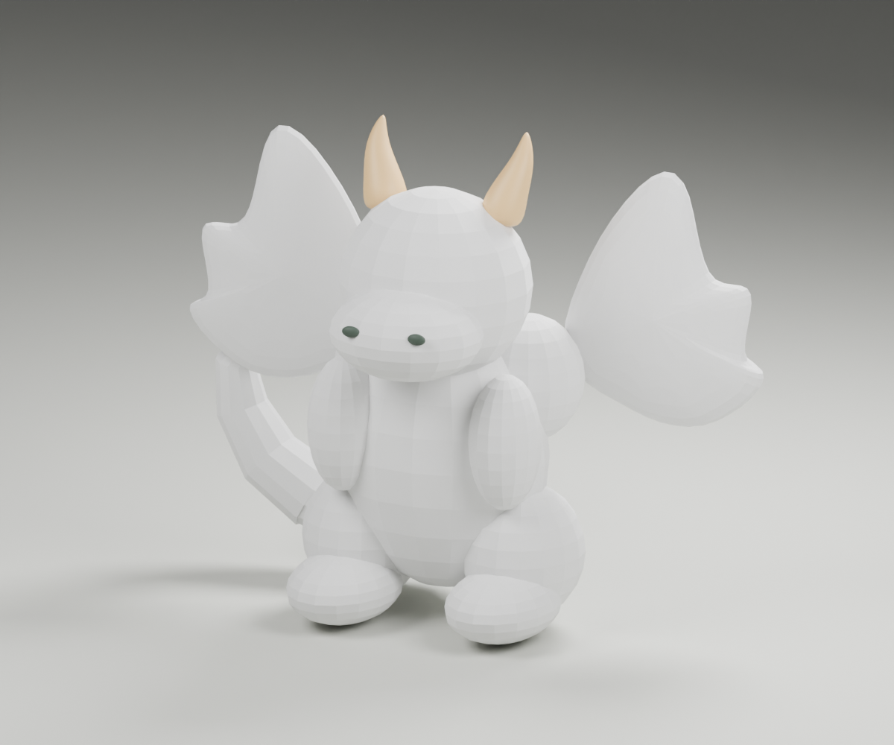
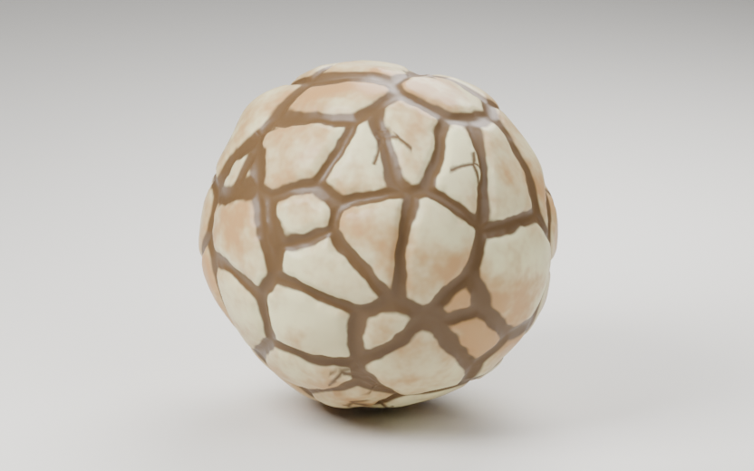
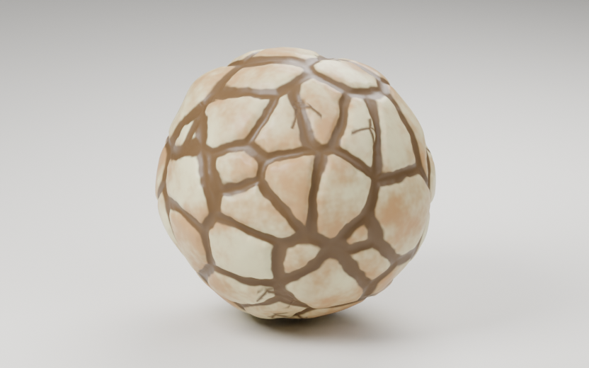
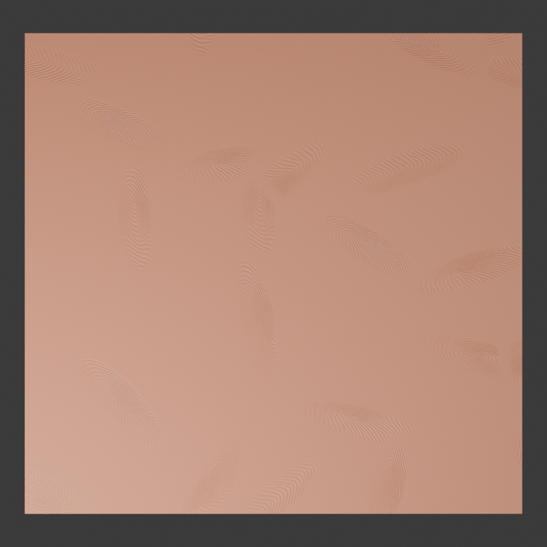

01. Open your dragon blockout
Install Meld Clay v1, then open 01-Ember-Blockout.blend in Blender. Save As Ember-My-Dragon.blend. Keep 02-Ember-Reference.blend as a finished example you can explore separately.
Ember is built from eleven body parts, two parts per wing, cream horns, nostrils and editable eyes. The body surface is the belly too. The starter opens with the eleven body sources selected. Its wings and facial accents stay separate.
Press N in the viewport and open Meld Clay. Use Search settings at the top when you know a control name: try Crack or Fingerprint. Clear the search with its × to return to the normal panels. Switch to Material Preview to see finishes.


Build the core in chapters 1–6, then use the remaining chapters to make Ember your own.
New models start with Shape style: Palm rolled. The supplied finished reference keeps its saved shape in Custom. To explore the current shaping on a copy, choose a named Shape style; or choose Enable Clay Shaping for individual controls with zero added rounding and pressure. Older models may first request Update Form Variation; Update Softening is a separate saved-model update when offered. Chapter 7 explains the choices.
Search is also available in the viewport header while you scroll the sidebar. Try Move to find Move Whole Model, or Hand pressure to jump to shaping. The header and sidebar share the same search; clear either one to restore the full panels.
02. Meld the body and separate wings
- The starter opens with the 11 body parts selected. If necessary, right-click 01 · Body blockout in the Outliner and choose Select Objects. Check that cameras, lights, wings and accents are not selected.
- Click Meld Selected Parts. Rename the generated model Ember · Body. The smooth surface replaces the visible blockout; its source parts are preserved.
- Under Clay Finish, choose Plasticine, then choose a mint green. For a finish close to the saved reference, set Finger impressions 0.12, Surface grain 0.12, Mineral flecks 0.02 and Color variation 0.08. Set Crack displacement 0.
- Open Shape & Melding. After choosing the finish, choose Shape style: Palm rolled and set Resolution 160. Keep Surface cleanup Auto. Palm rolled sets Knead / soften 45, full Source rounding, very shallow Hand pressure, and zero Form variation and Hand-shaped amount. The finish controls can set Hand-shaped amount, so choosing the shape recipe afterwards gives this lesson a consistent starting shape.
- Deselect the body. Select Membrane L and Wing root L, and nothing else. Click Meld Selected Parts and rename the new result Ember · Wing L. Repeat with Membrane R + Wing root R for Ember · Wing R. Choose Smooth Baked and a coral color for each wing, then choose Shape style: Palm rolled and Resolution 112. Each wing remains its own two-part clay model.
If the wing names or folders have changed: identify the broad white wing by clicking its visible surface in the viewport. Rename that source Membrane L or Membrane R as appropriate, then select it together with its matching Wing root. Both selected objects should be raw wing meshes; the colored body must not have an orange selection outline. Already melded: use Edit Parts or Add Selected means a generated model or managed source is included in your selection.
Add Selected has a different purpose: it absorbs loose parts into the existing Target model and hides their originals. For separate wing materials, create a new model from the two loose wing inputs. If you accidentally added a root to the body, undo that Add Selected action immediately; if you have made later changes, use body Edit Parts, select only the mistakenly added root, and Remove to release it. Your normal body contains 11 parts.
The wing membranes are closed meshes with an ordinary Subdivision modifier on their source. The modifier softens the silhouette before melding. Each root overlaps its membrane and visually meets the body, but a wing is a separate clay model with its own finish.
You have three independently editable clay models.
Surface cleanup Auto reduces small steps left by rebuilding the surface. Source rounding and Knead / soften change the form itself. A smooth result still needs enough Resolution for thin wing edges and tail tips. Use chapter 7 to try the three shape recipes and protect details with Hold Shape.
03. Shape the tail and arms
- Select Ember · Body and click Edit Parts. The original polygon cages appear.
- Click empty space to deselect, then select Tail curl in the Outliner or viewport. Move it with G while keeping it overlapping Tail base. Try G, Z,
0.15, Enter. - Move an arm slightly outward, then press Ctrl+Z once. Check the surface returns. Make only one change per test so you can identify what Undo is undoing.
- Click Finish Editing Parts. Select a wing and enter Edit Parts there: the body cages should close automatically.
Object Mode moves whole parts. Tab edits vertices inside one source mesh; return to Object Mode before using the part-management buttons. Keep sources closed and overlapping. A disconnected source creates a separate island rather than a connecting bridge.
The tail and arms remain editable through their original parts.
04. Give the haunches pressed joins
- Edit the body parts. Deselect everything, select Haunch L, then Shift-select Body. Exactly two source parts must be selected.
- Open Join Controls. Read the Selected: names, then click Create Selected Join (or Edit Selected Join if the pair already exists).
- Choose Pressed. Set Crease strength 0.38, Crease width 10. Try strength 0.15 → 0.65 and width 6 → 18 separately; return to the reference values when done.
- Select only Haunch L. Under Part: Haunch L, set Hold Shape 0.45. Watch the leg retain more of its original contour: Hold Shape reduces artistic rounding and hand pressure on this source.
- For comparison, create Body ↔ Arm L as a Blended join. Compare its softer shoulder with the haunch seam. Blended disables the crease controls. For a softer end to an exposed Pressed seam, try End taper 0 → 2 → 0. It eases both width and depth over that many crease widths. A completely closed contact loop has no endpoints, so taper does not shorten it.
Crease width is a band radius relative to the smaller part's shortest bounding-box side, with a voxel-based minimum. Making it tiny will not create unlimited detail at low resolution. Pressed needs intersecting solids; it cannot bridge a gap.
Compare the left hip seam with the unmodified right side.
05. Copy a join to the other side
- Choose Body ↔ Haunch L in Saved join rules and click Edit Listed Join, or select those two sources and click Edit Selected Join. Verify the label says Editing: the correct pair.
- Click Copy Settings. Select Body and Haunch R, create/open their join, then click Paste Settings.
- Select only Haunch R and set Hold Shape 0.45 separately. Copy/Paste transfers style, strength, width and End taper; it does not copy Hold Shape or replace the connected parts.
- Drag Crease strength. Cages should disappear during the edit and return about 1.5 seconds after you stop. Click Hide Cages near the top for a longer look; click that same toggle again to restore them.
Hide Cages toggles viewport overlays in that view, so grid lines and selection outlines can disappear too. It does not delete cages or alter the render. A manually hidden overlay should stay hidden after crease edits.
If controls are gray: check Object Mode, the selected pair and the Editing/Listed label. Use Edit Selected Join for your new selection, or Edit Listed Join for the saved row. Remove Join Rule removes a rule; it is not a deselect button.
Both hips share a crease style; each haunch keeps its own Hold Shape value.
06. Place editable clay eyes
- Finish editing the body. Open Clay Eyes. Choose Cat, Eye diameter about 0.35, and enable Follow surface after placing.
- Click Place Eye on Surface and place an eye on the upper face, above the muzzle. Repeat on the other side. If a placement feels wrong, cancel with Esc or use Reposition Selected Eye. Place Eye on Surface creates another eye; Reposition Selected Eye moves the existing one.
- Select one eye. Try Round → Cat → Heart → Star → Cross → Diamond, then return to Cat. Adjust Eye height, White bulge, Sink into surface, Pupil size, Pupil rotation and Pupil bulge one at a time.
- Enable Colored iris. Under the white, iris and pupil material regions, try Smooth Baked for the white and Glazed Ceramic for iris and pupil. Choose cream white, amber iris and a very dark pupil. Pupil size 0.38 approximates the reference.
- Try Look left / right and Look down / up. Return near 0. Try Handmade shape and Shape seed for an irregular eye outline.
Use Finish Colors adopts that preset's palette; choosing a finish alone preserves the region's chosen colors. Preset finishes have their own response; the Classic Eye roughness/grain/gloss controls are for the classic shader. Test eye Sticky/World and Eye texture scale separately from the body's texture controls.
Optional: asset drag-and-drop, visibility and attachment
Use Enable Eye Asset Library, choose the Meld Clay eye library in Blender's Asset Browser and drag a pupil preset into the scene. Select the dropped eye, enable Follow surface after placing, then use Reposition Selected Eye to fit and attach it to the body. Place Eye on Surface creates another eye.
Toggle Show white and Show pupil. Try Add Eye at Cursor for a free-standing eye, and Detach from Surface on a placed eye. Undo each experiment. Attached eyes follow nearby surface changes, but a major form change can still need repositioning; horns and nostril accents do not automatically snap to a reshaped head.
Each eye has editable shape, placement and three independent finish regions.
07. Choose your clay shape
Save a copy as Ember-Experiments.blend. Select the finished body and open Shape & Melding. Shape recipes change the geometry; your material supplies the color, gloss, grain and fingerprint ridges. Start with a recipe, then change one control at a time.


These are actual Blender renders of the same 54-face source ball with Hold Shape 0, the same seed, finish and lighting. They show the recipes on a simple shape; Ember’s parts and existing Hold values produce their own contours. The saved dragon image in chapter 1 is a separate earlier reference.
- Choose Palm rolled → Thumb pressed → Gently kneaded in the Shape style dropdown. Pause after each choice and orbit the body, shoulders, haunches and tail. Return to your favorite. Recipes act relative to each source piece’s size, so you can use them on other models too.
- Choose Custom. Nothing jumps: it keeps the present values. Adjust Hand pressure down to soften the squeezes, or up to deepen them. A named recipe also switches to Custom when you change one of its recipe settings.
- Use Pressure areas for fewer or more contact regions and Pressure breadth for their spread. Use Random seed for another arrangement. For cracks alone, use Crack seed; for fingerprint ridges, use Fingerprint seed.
- Inspect small contours after each broad change. Use Edit Parts, select one haunch or tail source, and adjust its Hold Shape in Join Controls to protect that part. Then Finish Editing Parts. A model with only one source exposes the same Hold Shape directly below Knead / soften and in search; the multi-part Ember body keeps the per-source controls.
- Check the eyes, separate horns, nostrils and wing contacts before continuing. Attached eyes follow their surface, but major reshaping can require repositioning. Broad shape changes also change the surface followed by joins, cracks and bites.
| Control | Try | What changes |
|---|---|---|
| Source rounding | With Knead / soften 45: 0 → 1 | Round the coarse source contours before melding. Zero retains the cage character. Hold Shape reduces rounding on protected parts. |
| Knead / soften | 0 → 45 → 120 → 45 | Zero disables source rounding. At 45, the selected Source rounding is fully active; higher values continue softening the melded surface. Hand pressure stays independent. Compare thin tips and seams. |
| Hand pressure | Choose a recipe, then lower or raise its value | Broad smooth squeezes, measured as a percentage of each source piece’s radius. Zero adds no pressure. It changes geometry without adding grain or fingerprint ridges. |
| Pressure areas / Pressure breadth | Try areas 2 → 5, then breadth 0.7 → 1 | Choose the number and spread of the squeezes. Larger breadth spreads the pressure more widely. Restore your chosen recipe for its starting values. |
| Surface cleanup | With Knead / soften 0: Off → Auto | Reduce small remeshing steps independently of the artistic shaping. Auto also works on held parts; it does not by itself round a coarse polygon cage into a ball. |
| Resolution | 96 → 160 → 192 | More samples for thin tails, wing edges and surface details, with a higher update cost. Compare at Full Quality Now. |
| Inflate / deflate | 0 → 0.5 → −0.2 → 0 | Grow or shrink source surfaces before fusion, changing overlaps and contacts. |
| Midlevel | 0.5 → 0.4 → 0.6 → 0.5 | Lower values inflate the finished surface; higher values deflate it. This moves the finished surface along its normals, changing fullness without adjusting individual source proportions. |
More shape controls: earlier proportion and noise effects
Form variation changes seeded axis proportions around each source part’s center. It can stretch or widen pieces, but it does not automatically redesign attached character proportions. For a larger head or shorter arm, use Edit Parts and scale or move that source deliberately.
Hand-shaped amount is the earlier normal-direction surface noise. Hand-shaped scale changes its frequency: lower values give broader undulations. These can be useful for rougher clay, but Hand pressure is the starting point for smooth playdough squeezes. Named shape recipes set Form variation and Hand-shaped amount to zero. Closing More shape controls does not turn any effect off.
Saved models: they keep their earlier shape in Custom until you choose a named style or Enable Clay Shaping. Presets never reset per-part Hold Shape. Keep a saved copy before opting in. If Update Form Variation is requested, apply that earlier update first; the shaping step also handles the required softening update. Read the complete shaping control reference.
Copy the feel: use the Copy and Paste icons on the Shape & Melding title to transfer the shape recipe and individual controls. This also transfers Resolution and preview settings; it leaves editable sources, materials, joins and per-part Hold values with the destination. On an older destination, choose Enable Clay Shaping first if requested. Copy Clay Finish separately when you also want its surface appearance.
Choose a clay recipe, refine its pressure, and protect small forms before adding final details.
08. Customize and copy material finishes
Click either finished wing directly in the scene, with source editing finished. Its outline should cover the whole wing, and the panel should say 2 parts. Its name may be Ember · Wing R or Meld Clay.002; do not select the old membrane or wing-root source object. This lets you compare a new finish against the body. Turn Keep my colors off for the preset palette, then on and choose two custom colors before switching again. The curved reset-arrow beside the preset is Reset Finish; it reapplies the preset, respecting Keep my colors.
| Finish group | Presets to cycle through | Check |
|---|---|---|
| Basic clay | Soft Dough, Smooth Baked, Bumpy Clay, Plasticine, Terracotta | Roughness, pores and impressions. Some finishes also set the earlier Hand-shaped amount under More shape controls. Use a Shape style for smooth broad pressure; Surface grain is fine texture. |
| Fired / wet | Glazed Ceramic, Raku Clay, Wet Clay | Gloss and roughness under the same light. Raku has dark glaze, mineral patches, fine crazing and optional colored sheen. |
| Cracked / organic | Dirty Clay, Bubble Gum, Dry Cracked Earth, Chocolate Truffle | Some presets change actual crack displacement as well as the shader. Inspect silhouette and settings after switching. |
| Optical / mixed | Translucent Clay, Candle Wax, Metallic Clay, Marbled Dough, Iridescent Clay | Transmission, subsurface response, reflections, two-color mixing and thin-film color. Judge optical finishes in Rendered mode or F12 too. |
For each useful finish, adjust Clay color, Second clay color, Color mixing, Color patch scale, Roughness, Color variation, Surface grain, Grain frequency, Mineral flecks and Texture scale. Then explore Wax, Glaze & Optical Finish: Soft translucency, Glaze, Metallic, Transmission, Refraction IOR and Iridescence. Try one control, note its effect, restore it.
Override material is for your own Blender material. Built-in finish controls cannot rewrite an arbitrary custom shader. Clear the override before judging the built-in presets. The reference uses ordinary materials on horns and nostrils, so select a live body or wing to test the clay preset panel.
1. Customize the color layout
- Save an experiments copy of your dragon. Click one finished wing in the scene. Choose Dry Cracked Earth in Clay Finish, with Keep my colors off to try its cream and ochre palette. Choosing this preset also sets its crack style and broad hand-shaped bumps.
- Keep Color mixing 0.80, Color variation 0.50 and Color patch scale 6.5 for this comparison. Change Color variation seed from 0 → 7 → 21 → 0, or use its refresh-arrow button to try another layout. Only the color mottling and blended pigment patches should move. Crack paths, grain, fingerprints and the wing's shape should stay put.
- Choose your own Clay color and Second clay color. Color mixing controls their blend; Color patch scale controls patch size; Color variation controls tonal differences. The seed chooses a different arrangement using those same colors. A seed has little visible effect when color variation and mixing are both zero.


Seed 0 restores the original color arrangement for the current settings. Switching or resetting a material preset keeps your color seed; enter 0 explicitly to compare its original layout. The main Random seed and Crack seed have different jobs. On Raku, this color seed moves pigment mottling within the glaze; the glaze/earthen-patch boundary and fine crazing keep their placement.
2. Find the controls that make the complete finish
Dry Cracked Earth spans several panels. Clay Finish controls its pigment and surface finish. Open Fingerprints & Cracks → Crack style: Dry Fractures to change its connected creases. Open Shape & Melding → More shape controls for the preset’s earlier Hand-shaped noise. The finish preset selects these together; afterwards you can customize each part. Selecting or resetting a finish can therefore make Shape style display Custom. It keeps your Source rounding and Hand pressure values. Choose your finish first and a named Shape style afterwards when you want the recipe’s smoother geometry.
| Appearance to change | Where to go | Small test; then restore |
|---|---|---|
| Larger clay cells | Fingerprints & Cracks → Crack scale | 1 → 1.2 → 1. The dry-earth network stays connected; its paths move as the cells resize. |
| Wider openings on the same paths | Fingerprints & Cracks → Crack width → Custom → Width factor | 1.5 → 2.0 → 1.5. |
| Deeper main creases | Fingerprints & Cracks → Crack displacement | 0.60 → 0.80 → 0.60. This changes the mesh. |
| More smaller interior creases | Fingerprints & Cracks → Fine fissures | 0.06 → 0.20 → 0.06. More branches appear; lowering the value removes some while the remaining creases keep their color and depth. No triangles are added. |
| A different crease color | Fingerprints & Cracks → Crack color | Try a warmer brown. Its reset arrow restores automatic coloring. |
| Softer or broader hand-worked bumps | Shape & Melding → More shape controls → Hand-shaped amount / Hand-shaped scale | Try amount 6 → 3 → 6. Lower scale makes broader bumps. |
3. Copy your complete finish to the other wing
- With your customized finished wing selected, click the Copy icon at the right of the Clay Finish title.
- Click the other finished wing directly in the scene. Its generated name may differ from the old Wing L/R collection names. Click Paste beside Clay Finish once. Do not reselect the material preset first.
- The preset, colors, color seed, surface grain, optical finish, fingerprints and customized cracks should all apply together. Allow the surface to refine after the paste. One Undo should restore the destination's previous finish; Redo should bring your copied finish back.
What stays with the destination: its editable parts, joins, Shape & Melding values, Sticky/World mode and any custom material override. If you also want matching broad bumps, copy Shape & Melding separately; that also transfers resolution and other shaping values. Matching finish values do not guarantee identical patch positions on differently shaped, sized or positioned wings. A custom material override still takes precedence over the built-in finish.
4. Reuse Dry Fractures on another clay
- On a spare wing in your experiments copy, choose Smooth Baked and a color you like. Keep the first customized wing available as your source.
- For a modest new combination, open Fingerprints & Cracks, choose Dry Fractures, then try Crack scale 1, Layout density 5, Crack width Medium, Crack coverage 0.7, Crack displacement 0.2, Fine fissures 0.08 and Standard quality. The baked clay keeps its color and satin finish while gaining connected creases.
- Alternatively, copy Fingerprints & Cracks from your first wing and paste beside that same title on the baked wing. This transfers surface details, including crack color, without replacing the baked palette, color seed or optical finish. Change Crack color or use its automatic reset to suit the new palette.
- Once you like a combination, copy Clay Finish to transfer the whole customized finish elsewhere. Selecting a preset afterwards reapplies that preset's appearance settings, including its cracks; customize after selecting the preset.
You can combine a finish, color layout and reusable crack style, then copy them together.
09. Move Ember with Sticky and World textures
- Click the finished wing in the scene and apply a visibly patterned finish such as Marbled Dough. In Movement & Textures, choose Sticky and click Move Whole Model.
- Move the selected handle with G, X,
1. The material pattern should travel with the wing. Undo the move. Test rotation and scale separately. - Choose World and repeat the translation. The wing samples a different region of the texture as it moves. Undo; return to Sticky.
The supplied reference parents accents to the body handle. If you built your own starter version, parent ordinary accents to that handle with Object (Keep Transform) before moving the assembly. Attached eyes already follow their surface. Sticky preserves whole-model transforms; reshaping a source part can stretch/change where detail sits on the new surface.
Move the three handles together to move the complete dragon.
10. Make your own thumb impressions
Use the body in your experiments copy. Set Crack displacement and Crack coverage to 0 temporarily so the prints are easy to isolate. Zoom into the head or back.
- Set Finger impressions 0.4, Print density 5, Thumbprint stretch 1.9, Print irregularity 0.35.
- Change Thumbprint size from 1 to 0.6, then 1.4. Track one identifiable print: this is the size control. Print density changes spacing/layout and is a different test.
- Try stretch 1 → 3 → 5: round impressions become longer and narrower, with a similar area. Try irregularity 0.1 → 0.6. Prints include varied loops, curled whorls and arches. Change Fingerprint seed 0 → 7 → 38 → 0 or use its refresh button to rearrange their positions, orientations and ridge families. Your color pattern, cracks and mesh stay unchanged. Restore the strength to taste.
On an older saved material, Update Thumbprints enables the newer controls. If that button is not offered, continue with the available controls. Print impressions are shader relief; they do not cut deep silhouette dents into the mesh.
Choose the size, spacing, shape and layout of your impressions independently.
Fingerprint seed drives a thumbprint generator. Each seed grows new ridge patterns with loops, arches, whorls, forks and endings. The refresh arrow generates another set. Uneven pressure blends each impression into the clay, and the generated relief is stored inside the Blender file.

Orbit over Ember’s shoulders and head while adjusting prints. Surface-angle correction reduces accidental diagonal stretching; Thumbprint stretch sets the elongation you choose.
11. Add and style cracks
Start on the dragon’s back so the eyes do not obscure the result. Choose Soft Dough, Crack quality Standard, displacement 0.25, detail 0.2, Layout density 4.5, Crack width Medium, coverage 0.6, seed 12 and scale 1. Let the surface finish updating; use Full Quality Now if adaptive preview is enabled.
Soft Dough makes long, winding grooves on the surface, with fuller middles and pinched tips. It works with any clay finish. Older live models adopt the current system when you edit their crack controls, preserving the current opening, your chosen settings and editable sources.
The controls are grouped into Crack shape for style, depth, width, coverage and seed; Crack layout for spacing, detail and scale; and Crack finish for color and quality. Open Crack tips when you want advice. For a complete button reference, including Copy/Paste and Clay Eyes, use Using Meld Clay.
- Pick a recognizable crack. In the Crack width dropdown, choose Fine → Medium → Wide → Medium. These choices change only width. Then choose Custom: the current width stays intact and an Opening field appears. Edit that length for an in-between width. The seed stays unchanged.
- The measurement is the full opening at the widest middle; the tips are narrower. Blender uses your scene units, or BU for Blender units when no unit system is selected. Uniform whole-model scaling is included. With uneven scaling or shear, Opening (local) reports model-space width because the world opening varies by direction.
- Keep your opening and change Layout density 4.5 → 6 → 3 → 4.5. The opening stays steady while path spacing and placement change. Higher density generally packs more paths into the model; crowded paths may shorten or disappear to keep clearance.
- Try Crack scale 1 → 0.7 → 1.3 → 1. This shortens or lengthens the grooves along their surface paths from the same middle. Use Crack width → Custom → Opening to change width and displacement to change recessed depth.
- Change Crack seed alone. Expect another layout while the dragon’s body and thumbprints stay unchanged. Try the refresh arrow, and orbit the front, back and underside before choosing a favorite.
- Try Crack detail for more or less wandering, and lower Crack coverage to leave fewer or shorter grooves. Set coverage to zero to remove them. Crack color fills the recess; edit the swatch for a custom shade or use its reset arrow for automatic color.
Try another style: Dry Fractures makes connected clay plates. Its Crack scale changes plate size. It has the same Fine, Medium, Wide or Custom width dropdown, but Custom exposes Width factor relative to the cells: 1.0 is Medium, 0.5 is Fine and 2.0 is Wide. Custom keeps the current width until you edit it. Actual gaps vary along the boundaries and grow with cell size. Dry Cracked Earth retains its authored width as Custom, factor 1.5. Fine fissures adds smaller shader creases inside the plates. Select these crack styles separately from your material finish, or copy Fingerprints & Cracks to reuse it on another clay model.
Use opening for width, scale for groove length, and density for spacing. Choose Standard when judging finished walls.
Optional: turn fractures into soft compression
On a working copy of Ember’s body, choose Crack style → Compression. Try Gentle, Clumped and Pressed, then adjust Lump size and Valley width. Keep Valley color → Inherit material so the dragon’s clay colors flow through the valleys; Optional tint adds a gentle accent. Secondary fissures stay off, including Raku crazing.
Compression rounds the cell intersections for a softer clay effect. It keeps the body’s Shape & Melding controls and join rules. Switching back restores that crack style’s remembered settings. Use Standard for the first render check; dense or strong relief may need Close-up or more Resolution. See the illustrated Compression treatments and all controls.
12. Add playful bite marks
- Choose Bubble Gum on the body in your experiment copy. Set Crack displacement 0 and Crack coverage 0 to isolate bites.
- Open Bite Marks, enable Bite marks, and try Bite size 22, Bite depth 0.45, Bite coverage 0.55, Bite variation 0.2, Bite seed 7.
- Change size 15 → 30, depth 0.2 → 0.65, then seed 7 → 8. Test coverage and variation separately. The pattern is an aligned tooth arc; seed/coverage may put it on a less visible side, so orbit the model.
- Toggle Bite marks off. The tooth dents should disappear. Toggle back on and confirm they return.
Bites are procedural dents, not a brush placed at your cursor. Small teeth need enough mesh resolution; try 192 for inspection. If an old saved model's controls do nothing, look for Update Bite Shape. If that button is not offered, continue with the available controls. Save a new copy once you like the result.
Keep the bite pattern you like, or disable it to restore the original surface.
13. Choose a comfortable editing preview
- On the body, restore a simple finish and set Resolution 160. Enable Adaptive preview, Moving quality 0.55, Refine after 0.8. Initially leave Fast fusion while moving and Light material while moving off.
- Move Haunch L, then move Body and Head together. Pause. Drag a crease slider and pause. Compare responsiveness and the time until the refined result returns.
- Click Use Faster Preview. It enables Adaptive preview, Fast fusion while moving and Light material while moving. Repeat exactly the same edits.
- Click Full Quality Now before comparing final shapes. Then disable Adaptive preview and compare the same final pose. Save/reopen and render that pose as a final check.
Moving quality is a fraction of voxel resolution. Fast fusion temporarily skips the expensive exact union, and Light material temporarily omits fine shader details. The moving surface can look different; the final surface should recover. A custom material override is kept.
Live surface pauses the geometry modifier's live display/update path; re-enable it before comparing or baking. Adaptive preview is for part movement and join edits; do not assume every material or crack slider gets the same preview behavior.
Use the same camera and pose when choosing which preview settings feel comfortable on your computer.
Use Full Quality Now before judging the final model.
14. Add and remove a new part
- Finish editing the body. Add a small UV sphere through Blender's Add menu, scale it into a spike-like oval and place it overlapping the back. Name it Test spike.
- Select the body and enter Edit Parts, then select the loose Test spike in the Outliner. The target stays on the body. Check its name, then click Add Selected once. The part count and visible surface should update immediately.
- Select only the spike cage and click Remove. It should become an ordinary separate source again, not disappear permanently. Join rules involving it are removed too; other joins keep their settings. Undo restores the part and its rules together. Do not remove all remaining parts.
- Try a managed source from one wing as an input to the body. The add/meld action should be unavailable or explain that it belongs to another model. Cancel the test; do not detach the wing's real parts unless that is your intention.
Blender gives same-scene duplicates suffixes such as Arm L.001. In a scratch copy, rename/relabel source objects and reselect each actual pair. Rules should follow object identity, not switch merely because their displayed names resemble another pair.
A new part can join a chosen model and return to an independent object.
15. Bake a copy and recover editable parts
Save As Ember-Recovery-Practice.blend. These exercises intentionally change ownership or remove the generated surface. Reopen your main experiment copy afterwards.
Undo / Redo a multi-part move with joins
Edit the body. Select Body, Head and Haunch L, translate them a small amount, then Undo and Redo once. Repeat while Adaptive preview is enabled, including a move followed promptly by Undo. Do the same after a crease change. Check selection, cages, joins, material and final pose. Keep your main dragon saved separately while practicing recovery.
Bake Mesh Copy
Finish editing. Under Finish & Utilities click Bake Mesh Copy. You should get a normal mesh; the editable original is retained but hidden in the viewport and render. This bakes geometry, not a texture atlas. The material remains a Blender shader. It only bakes the selected model, so wings and eyes remain separate. Orbit and inspect the copy; try editing vertices on it. Reopen the scratch file when finished.
The Geometry Nodes modifier's Bake Target / Bake Path window is Blender's node-cache interface, not this operator. It is not required for the normal Meld Clay workflow. Use the add-on's Bake Mesh Copy for an editable mesh snapshot.
Restore versus Recover
Restore Original Parts removes the live generated clay surface and releases its original source meshes. It is not the everyday Finish Editing Parts button. In a fresh scratch copy, select the body and test Restore. Confirm the 11 original body meshes still exist and can be melded again.
For the deleted-model case, reopen the reference as a scratch copy, delete only the generated body object through the Outliner, and reveal/select the remaining source meshes in its Parts collection. Click Recover Selected Parts, then meld them. This is the button for orphaned ownership after manual deletion. Do not delete the entire source collection. Eye attachment may need to be rebuilt if its target was deleted.
Keep the live dragon alongside any exported or baked copies.